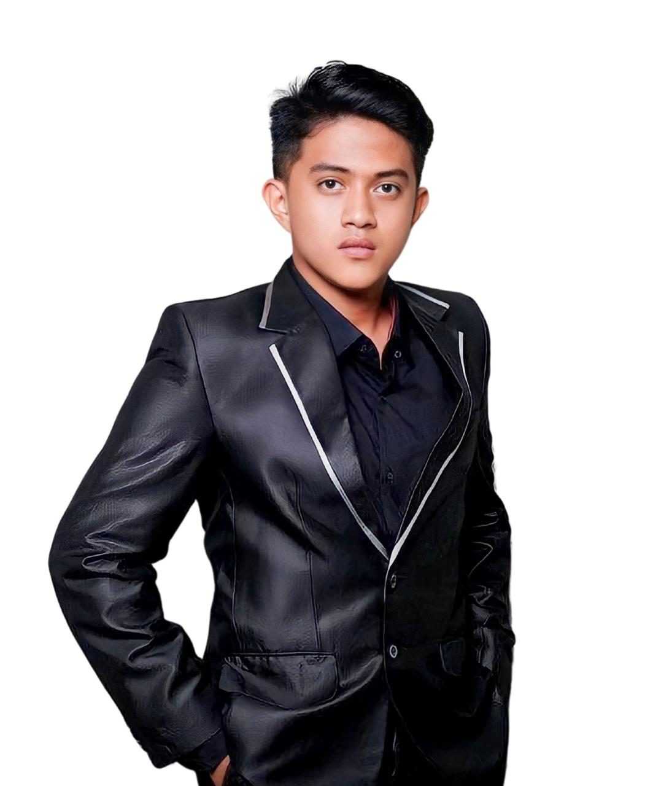

Loading...
Loading...

Tenaga pengajar berpengalaman dan berdedikasi tinggi di bidang pertambangan dan rekayasa mineral
Dosen-dosen berkompeten yang membimbing mahasiswa Teknik Pertambangan UKIP Makassar



Tim administrasi yang mendukung kelancaran operasional program studi
Mengelola administrasi perkuliahan, penjadwalan, dan layanan akademik mahasiswa.
Mengelola fasilitas laboratorium dan mendukung kegiatan praktikum mahasiswa.
Mengelola koleksi literatur dan referensi akademik di bidang pertambangan.
Program Studi Teknik Pertambangan UKIP Makassar membuka kesempatan bagi tenaga pengajar dan staff yang berkompeten.